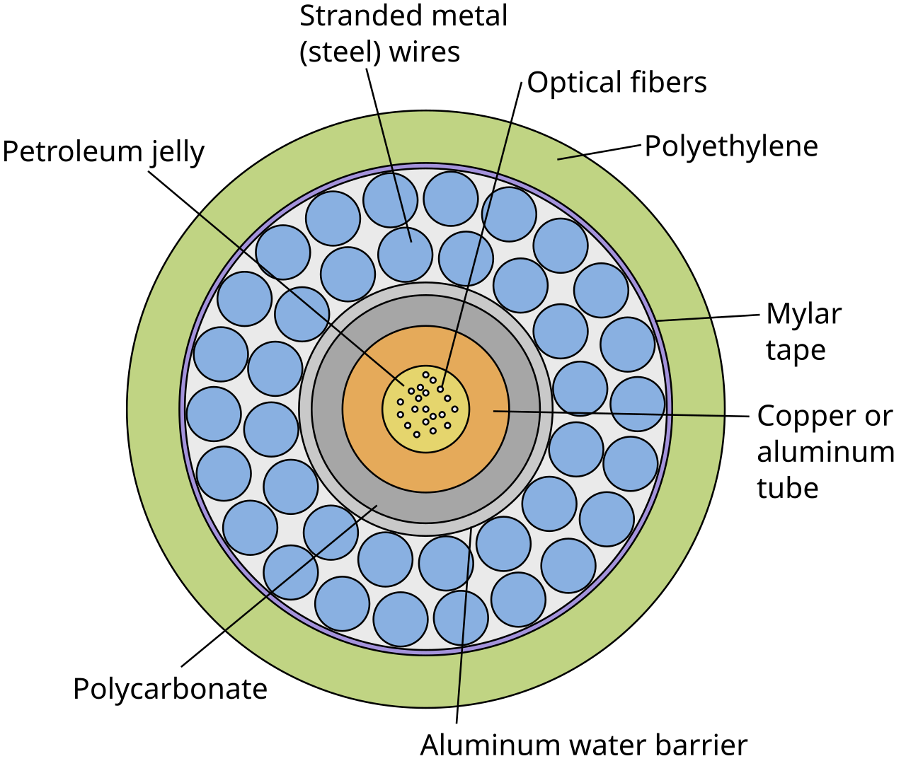

本周议题 01 · 全球 / 数字基础设施
全球数据走海底：光缆韧性为什么不只是“多铺几根线”？
互联网看起来在云端，跨国数据的大部分旅程却贴着海床完成。真正的风险不只在断缆，还在修复许可、船只调度和路线是否集中。

先说发生了什么
国际电信联盟与国际海缆保护委员会在2026年7月发布海底光缆韧性报告，把问题归纳为三类：部署和修复是否及时、风险能否被识别和缓解、连接路线是否足够多样。报告强调，跨境通信与金融高度依赖海缆，而小岛国家和只有少数登陆点的地区尤其脆弱。
光缆并非神秘地悬在深海里。铺设前要勘察路线，近岸段常被埋入海床或加装铠装，深海段则依赖海床相对稳定。故障定位后，维修船把受损段捞起、接续再放回海里；技术动作之外，还要穿过领海许可、港口、海关和船期。
顺手多懂一点
冗余不是“有第二根”，而是第二根不能和第一根一起出事
如果两条线路在同一海峡、同一登陆站或同一城市管道里并行，它们在网络图上是两条，在地震、锚损或停电面前却可能是一个故障点。有效冗余要同时分散海上路线、登陆位置、陆上回传和运营主体。
这解释了为什么一条新光缆的价值不能只用带宽衡量。它还可能为一个地区增加另一条物理路径，让流量在事故发生后有地方绕行。
真正值得聊的地方
最便宜的网络，未必是最能修的网络
价格竞争会鼓励线路共用成熟走廊、登陆站和维修资源，因为这样建设快、成本低；集中度越高，单点事故的外溢范围越大；一旦故障，维修船、备件与审批又成为新的瓶颈。效率把平时的成本压低，也可能把罕见事故的成本集中到同一天。
政府希望掌握关键基础设施风险，运营商却担心公开精确路线会增加安全威胁；沿海监管者要保护环境，通信部门又希望快速抢修。更好的治理不是取消这些目标，而是预先约定紧急许可、共享匿名化故障数据，并对路线多样性做压力测试。
边界也要说明：不是每个国家都负担得起完全独立的多套海缆。对小市场而言，区域共建、备用卫星链路和跨境维修协议，往往比追求形式上的“自给自足”更现实。
网络韧性不是多一根线，而是事故发生时，第二条路真的没有和第一条路共用同一个命门。